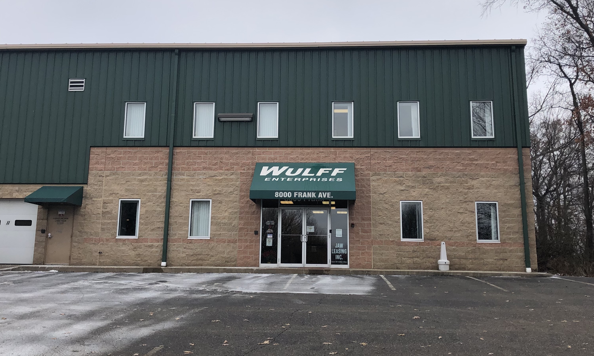

“And they devoted themselves to the apostles’ teaching and the fellowship, to the breaking of bread and the prayers.” Acts 2:42
We are a new church plant of the PCA (Presbyterian Church in America) in Northern Stark County, Ohio. We believe that the ordinary means of grace-what God says in His word is central to the health and growth of His people- is how God builds and grows His kingdom. At Trinity Church, the Bible is preached and applied to the people of God for the glory of God. We strive to be a loving community that reaches out and welcomes all in the name of Christ, while encouraging and serving one another in discipleship and outreach. We are a people of good news about a loving and redeeming Savior who is the sovereign Lord of the universe.
We meet for worship on Sunday mornings at 11am in the meeting space of Wulff Enterprises 8000 Frank Ave. NW North Canton, OH 44720.
We also meet for dinner and fellowship on Wednesday nights at 6pm, followed by a verse by verse Bible study at 7pm at the home of Pastor Hutchings 722 Sunset Blvd. SW North Canton, OH 44720,
We would love to meet and welcome you! If you have any questions, please don’t hesitate to contact us at cleehutchings@gmail.com.
In March of 2018 Pastor Lee Hutchings and his family moved back to Northeast Ohio to begin the work of establishing a core group for a new PCA church in Canton. As a mission church of the Ohio Presbytery, we are also sent by and under the oversight of Grace Presbyterian Church in Hudson, Ohio (Grace's Website). Trinity Church PCA began meeting at the home of one of our core group families on May 2, 2018. We began by studying the book of Ephesians and Acts 2, talking about our identity in Christ and what it means to live for Him as the church. Throughout the summer and fall of 2018, we began adding fellowship events for both men and women, and the Lord graciously added to our core group and fellowship. We hosted our first annual “Christmas Lessons and Carols” on Sunday December 23 at Trinity Brethren Church in North Canton. We look forward to all the Lord will do in and through our young congregation as we seek to be faithful in following Him in all things.
As a Reformed and mission church of the PCA we believe the Bible is the written word of God, inspired by the Holy Spirit and without error in the original manuscripts. The Bible is the revelation of God’s truth and is infallible and authoritative in all matters of faith and practice.
We believe in the Holy Trinity. There is one God, who exists eternally in three persons: the Father, the Son, and the Holy Spirit.
We believe that all are sinners and totally unable to save themselves from God’s displeasure, except by His mercy.We believe that salvation is by God alone as He sovereignly chooses those He will save. We believe His choice is based on His grace, not on any human individual merit, or foreseen faith.
We believe that Jesus Christ is the eternal Son of God, who through His perfect life and sacrificial death atoned for the sins of all who will trust in Him, alone, for salvation.
We believe that God is gracious and faithful to His people not simply as individuals but as families in successive generations according to His Covenant promises.
We believe that the Holy Spirit indwells God’s people and gives them the strength and wisdom to trust Christ and follow Him.
We believe that Jesus will return, bodily and visibly, to judge all mankind and to receive His people to Himself.
We believe that all aspects of our lives are to be lived to the glory of God under the Lordship of Jesus Christ.
The statements above are a summary of what we believe. Our official doctrinal standards are the Westminster Confession of Faith and Catechisms. (Click Here)
Lee Hutchings was called by the session (elders) of Grace Presbyterian Church in Hudson, Ohio to be the Assistant Pastor for Church Planting in March 2018 with the responsibility of gathering and beginning a PCA work in Northern Stark County. He and his wife of 11 years, Diane, are the proud parents of one son, Harper, age 5.
Lee is a native of Akron, OH and attended Cuyahoga Valley Christian Academy where he met his wife Diane. After attending Concordia University in St. Paul, Minnesota and graduating from the University of Akron with a Bachelor's degree in English Literature, Lee received his Master of Divinity from Reformed Theological Seminary in Jackson, Mississippi in 2012. Lee was ordained a Teaching Elder in the Presbytery of Mississippi Valley while serving as Pastor of Discipleship and Congregational Life at Highlands Presbyterian Church in Ridgeland, Mississippi before being called to church planting. Lee has also served as an Adjunct Professor in the Bible Department at Belhaven University in Jackson, MS. Pastor Hutchings enjoys reading, playing golf, watching sports, and being with his family.